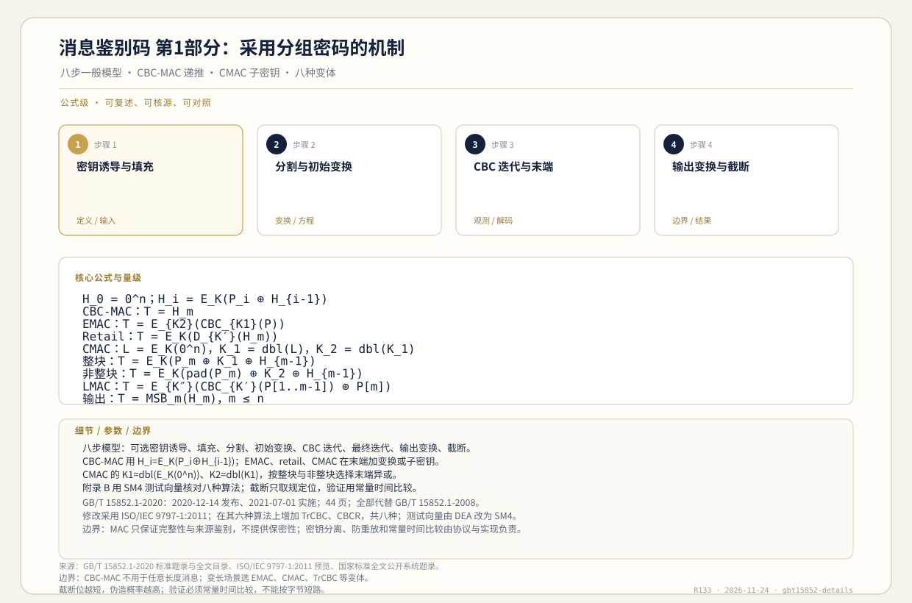
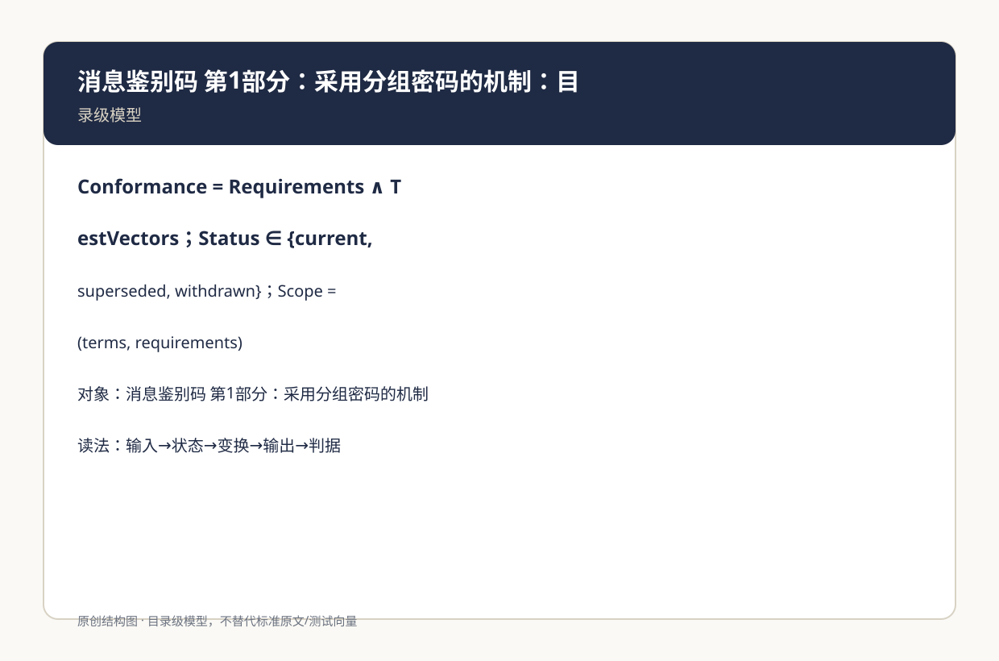

原理与机制
标准：GB/T 15852.1-2020 消息鉴别码 第1部分：采用分组密码的机制（Message Authentication Codes—Part 1: Mechanisms Using a Block Cipher）。GB/T 15852.1-2020 把采用分组密码的 MAC 写成一条八步流水线：密钥诱导（可选）、消息填充、数据分割、初始变换、迭代应用分组密码、最终迭代、输出变换、截断。最基础的 CBC-MAC 令 H0=0^n，逐块计算 Hi=E_K(Pi⊕Hi-1)，最后输出 Hm；其余七种算法都是在这条链的起点、终点或截断规则上做变换，以适配任意长度消息或降低密钥与存储开销。

为什么重要
CBC-MAC 只对固定长度消息可靠；把任意长度消息直接送进去，攻击者可用长度扩展拼出合法新消息。EMAC 在末端加一次独立密钥加密，ANSI retail MAC 用双密钥的加密-解密变换，CMAC 用 K1/K2 区分整块与非整块，都是在不增加过多分组调用的情况下切断这种拼接。标准把八种算法放在同一模型下，是为了让实现者按消息长度、密钥长度、存储和调用次数选型，同时用统一测试向量核对填充、初始变换、最终迭代和截断是否一致。
应用与实例
选型时先看消息空间：固定长度可用 CBC-MAC；任意长度优先 CMAC、EMAC 或 TrCBC；密钥长度只有分组密钥两倍时可用 MacDES；存储受限可看 TrCBC/CBCR。实现按附录 B 的测试向量逐步核对：SM4 分组长度 128 位、密钥 128 位；CMAC 子密钥 K1=dbl(E_K(0^n))、K2=dbl(K1)；截断只取规定位，不能自行改成异或或哈希。

边界与攻击面
MAC 只给完整性和来源鉴别，不给保密性；密钥跨协议、跨方向复用会削弱安全边界。截断到 m 位后，理想伪造概率约为 2^-m，但 m 太短时生日界和在线查询会让它更快被击穿。验证必须常量时间比较，不能按字节短路；CBC-MAC 不能直接用于变长消息；TrCBC 的标签长度受 n/2 限制，不能把它当通用长标签 MAC。
历史与背景
GB/T 15852.1-2020 于 2020-12-14 发布、2021-07-01 实施，全部代替 GB/T 15852.1-2008；它修改采用 ISO/IEC 9797-1:2011，并在后者六种算法基础上增加 TrCBC 与 CBCR，测试向量从 DEA 改为 SM4。这版把“采用分组密码的 MAC”从零散算法收拢为八种可选机制，同时保留 2008 版的用户要求与一般模型，便于国内密码模块和协议实现直接引用。
技术参数与复算边界
该条目的形式模型是 (S=\min_i S_i,\quad S_i\in{\text{密钥强度},\text{分组安全},\text{实现安全}})。输入：输入：GB/T 15852.1-2020 消息鉴别码 第1部分：采用分组密码的机制的公开参数、密钥/随机数与消息；变量说明：S 为综合安全强度；各分量取最小值，不能只看密钥位数。 预期输出：按 GB/T 15852.1-2020 消息鉴别码 第1部分：采用分组密码的机制 的规范执行后得到可验证的输出或可比较的优势界。 复算必须给出输入、步骤、输出和单位；示例只演示流程，不替代标准测试向量。
复杂度由密钥长度、分组/状态规模、轮数、随机数质量和敌手模型共同决定；参数越界、版本差异与实现侧信道都可能使公式结论失效。已登记限制：该条目只给出形式模型与可复算步骤，不声称已完成生产实现、侧信道认证或第三方安全评估。
逐步示例与核验
形式模型与复算步骤
[S=\min_i S_i,\quad S_i\in{\text{密钥强度},\text{分组安全},\text{实现安全}}]
GB/T 15852.1-2020 消息鉴别码 第1部分：采用分组密码的机制的公开参数、密钥/随机数与消息；变量说明：S 为综合安全强度；各分量取最小值，不能只看密钥位数。1.读取标准规定的密钥/分组/模式参数。2.按标准表换算等效强度。3.取最弱分量作为系统强度。边界：公式只覆盖已登记的参数与假设；参数取值、标准版本和实现细节仍以来源为准。
参考出处
- Wikipedia search entry for GB/T 15852.1-2020 消息鉴别码 第1部分：采用分组密码的机制. https://zh.wikipedia.org/w/index.php?search=GB%2FT%2015852.1-2020%20%E6%B6%88%E6%81%AF%E9%89%B4%E5%88%AB%E7%A0%81%20%E7%AC%AC1%E9%83%A8%E5%88%86%EF%BC%9A%E9%87%87%E7%94%A8%E5%88%86%E7%BB%84%E5%AF%86%E7%A0%81%E7%9A%84%E6%9C%BA%E5%88%B6
- Handbook of Applied Cryptography (Menezes, van Oorschot, Vanstone). https://www.cacr.math.uwaterloo.ca/hac/